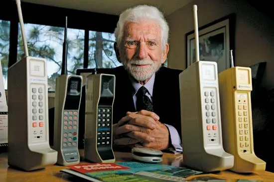

Alexander Graham Bell invented the whole phone idea but Martin Cooper, also known as Marty Cooper, an American engineer who led the team that built the first mobile cell phone in 1972-73, and made the first cell phone call. Cooper was born on December 26, 1928, in Chicago, Illinois, and he is widely known as the father of the cellular phone.
Cooper graduated from the Illinois Institute of Technology (IIT) in Chicago with a bachelor’s degree in electrical engineering (1950). He joined the U.S. Navy and served during the Korean War. After the war, he joined the Teletype Corporation, and in 1954 he began working at Motorola. He earned a master’s in electrical engineering from IIT (1957). At Motorola, Cooper worked on many projects involving wireless communications, such as the first radio-controlled traffic-light system, which he patented in 1960, and the first handheld police radios, which were introduced in 1967. He later served as a vice president and director of research and development (1978–83) for the company.